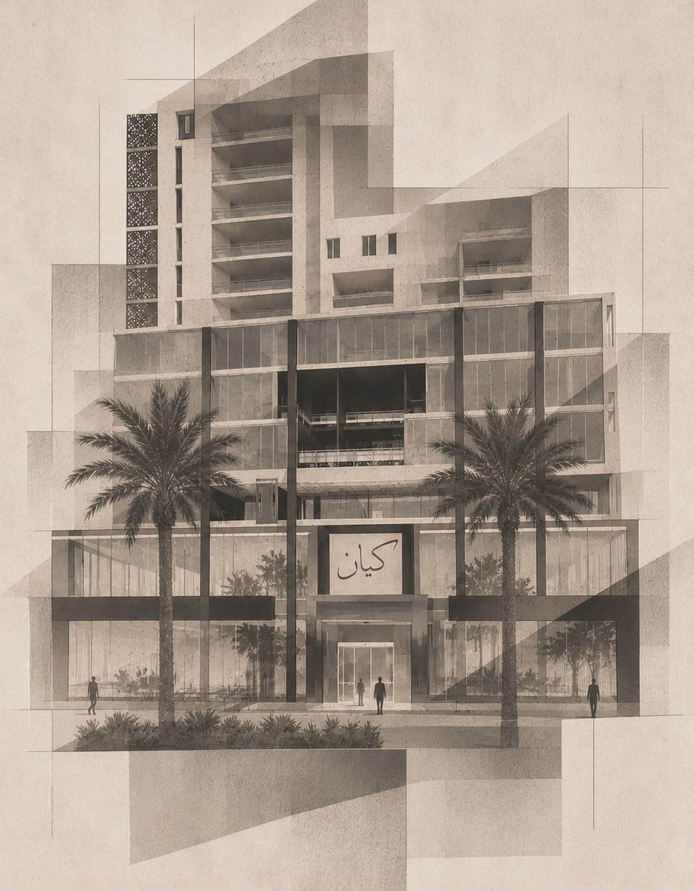

Four projects exploring computation across architectural design and documentation, from machine learning for healing environments and daylight driven façade design to room finish automation in Revit and drawing register and revision management.
Get in touch →A model that reads a patient's psychology and the site environment, then recommends the architectural design for their recovery phase (ceiling height, daylight, shading, and privacy) and scores how well that design supports healing, served live through a Grasshopper node.
A Revit 2025/2026 plugin that loads every room into an editable, schedule similar to Excel, with bulk editing, templates, validation, analytics, and an AI finish assistant, then pushes every change back to the model in a single transaction.
A Grasshopper definition that reads daylight and lux levels through a Python script node, derives the window to wall ratio per façade zone from that analysis, then sets each brick's rotation angle and opening size to match.
Illustrative hospital screen
These projects explore how computation supports architectural decisions and everyday documentation, from evaluating daylight and patient needs to scheduling room finishes and tracking drawing issues.